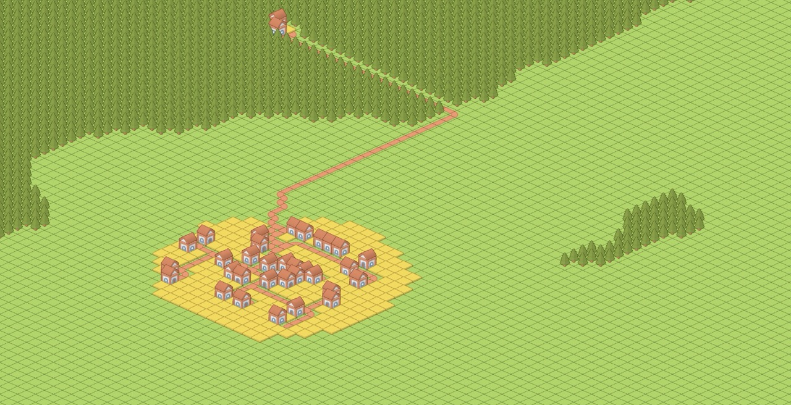

A Video Game
Author: Mats
Published: February 20, 2026

I'm working on a video game. I've been doing that on and off for about seven years now. It's a city builder where the city builds itself.
People are born and die, exploit the resources available to them, trade, build, interact. It wouldn't be much of a game if the player weren't involved though!
The idea is that while the population and it's economy is more or less self sustaining and growing, you control the government. You collect taxes to build government stuff like bouleuterions, military barracks, sewers, aqueducts, agoras, et cetera.
As you can tell the current setting is vaguely ancient or classical Greece. The game assets are from Kenneys "Sketch Town" packs (link) as of now, which is why it doesn't look "Greek".
Your actions influence the way the city and its populace develops. There should be certain inflection points during your city's development whose outcome hinges on how you manage, leading to growth and prosperity or a decline.
It should be a bit like gardening, but speedier. Plants grow on their own and new ones colonize your garden but you can, if you want, encourage growth in some direction. Or robustify by building hospitals, granaries, sewers, etc to take the brunt of potential famines or disease breakouts.
I will write more about the gameplay, techincal implementation, development history and whatever else comes to mind in future posts. I'm also itching to write about good restaurants in Oslo and elsewhere, and the amazing fact that most recommender systems are still crap in 2026.